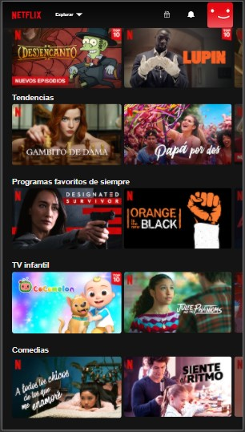
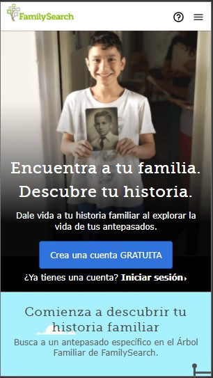

White space and Clean Design
Codecademy
https://www.codecademy.com/learn

In this web site we can see how the white space is well done, there is just significant content which gives a clean impresion, the simplisity of colors helps to this clean design becuase they play very well together and they are not conflicting, Something interesting about this topic at this viewport is that it is hard not to start looking at the very top of the page at the begining but kinda hard to focus on a single point.
PARC Repetition
Netflix
https://www.netflix.com/browse
It is easy to see the repetition over here. First we can see it thanks to the dark background and the red brand color. Next we can see repetition going to the left or going down, the division it has it gives a clear concept of repetition trought the hole website.
PARC Contrast
FamilySearch
https://www.familysearch.org/es/
About the contrast, this site has a really good contrast while going down, as a example we can watch at the imagen above the starting contrast while going down. this not happens just at the begining but in the hole homepage, there is a contrast between every new topic on the page. there is also a good contrast between its font and background colors. Including the brand logo.